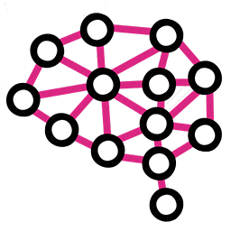

Mephisto - искусственный интеллект для игры в покер
Authorization
Poker simulator
Cards
Poker moves history
| Player | Balance | Action | Pot | Amount |
|---|
| Player | Balance | Action | Pot | Amount |
|---|
| Player | Balance | Action | Pot | Amount |
|---|
| Player | Position | Balance | Action | Pot | Amount |
|---|
- ha
- 3 players
- 10/20
- 15/30
- 20/40
- 30/60
- 40/80
- 50/100
- 60/120
test hill
test probab
| file name | date |
|---|
Left navigation
Mephisto Artificial Intelligence
Mephisto-AI - демонстрация возможностей искусственного интеллекта для игры в покер, основанного на глубинном обучении нейронных сетей, а так же удобный и уникальный инструмент для анализа и обучения игры в no-limit texas hold'em.
Программа обучалась играя сама с собой, а так же наблюдая за десятками миллионов раздач, которые были сыграны в руме Pokerstars. При создании модели оппонента Mephisto использует уникальные статистические показатели, синтезированные нейросетями во время наблюдения за игрой реальных игроков из покер рума. Программа способна принимать сложные и точные решения, эксплуатируя даже незначительные и незаметные для большинства людей отклонения от равновесия Нэша.
Помимо возможностей тотальной и "осторожной эксплуатации", программа способна рассчитывать равновесие Нэша в реальном времени на любой улице постфлопа с высокой точностью благодаря качественным gto-абстракциям и нейросетевым алгоритмам отсечения линий с существенно более низким математическим ожиданием (aналогично нашумевшей программе AlphaZero).
Искусственный интеллект Mephisto обучен игре 6max no-limit texas hold'em, а так же турнирам Spin & Go. Вы можете загрузить историю раздачи вышеупомянутого типа покера сыгранную вами в руме Pokerstars в симулятор и проанализировать ее на предмет ошибок.
Mephisto neuromodeling
В последние несколько лет мы наблюдаем взрыв интереса к нейронным сетям, которые успешно применяются в самых различных областях - бизнесе, медицине, технике, геологии , физике. Нейронные сети вошли в практику везде, где нужно решать задачи прогнозирования, классификации или управления. Такой впечатляющий успех определяется несколькими причинами:
- 1. Нейронные сети - исключительно мощный метод моделирования, позволяющий воспроизводить чрезвычайно сложные зависимости. В частности, нейронные сети нелинейны по свой природе. На протяжение многих лет линейное моделирование было основным методом моделирования в большинстве областей, поскольку для него хорошо разработаны процедуры оптимизации. В задачах, где линейная аппроксимация неудовлетворительна (а таких достаточно много), линейные модели работают плохо. Кроме того, нейронные сети справляются с "проклятием размерности", которое не позволяет моделировать линейные зависимости в случае большого числа переменных
- 2. Нейронные сети учатся на примерах. Пользователь нейронной сети подбирает представительные данные, а затем запускает алгоритм обучения, который автоматически воспринимает структуру данных. При этом от пользователя, конечно, требуется какой-то набор эвристических знаний о том, как следует отбирать и подготавливать данные, выбирать нужную архитектуру сети и интерпретировать результаты, однако уровень знаний, необходимый для успешного применения нейронных сетей, гораздо скромнее, чем, например, при использовании традиционных методов статистики.
Как правило, нейронная сеть используется тогда, когда неизвестен точный вид связей между входами и выходами, - если бы он был известен, то связь можно было бы моделировать непосредственно. Другая существенная особенность нейронных сетей состоит в том, что зависимость между входом и выходом находится в процессе обучения сети. Для обучения нейронных сетей применяются алгоритмы двух типов (разные типы сетей используют разные типы обучения): управляемое ("обучение с учителем") и не управляемое ("без учителя").
ИИ Mephisto обучался модели оппонента с учителем, наблюдая за игрой реальных игроков, используя "закрытую статистику" из стандартного майнинга. Тем не менее модель оппонента получилась практически без искажений.
Simulator manual
При стартовой загрузке страницы симулятора, будет загружена случайная рука no-limit texas hold'em short-handed NL 25, которая была сыграна на Pokerstars. Вы можете увидеть действия, совершенные игроками на разных улицах торгов. При нажатии правой кнопкой мыши на одном из действий, которое совершил какой-либо игрок, вы увидите выпадающий список, в котором можно выбрать следующие действия:
• Show range - при нажатии на эту кнопку появится спектр игрока, который совершил данное действие, в котором можно увидеть каждую руку и ее предполагаемую вероятность. Вес рук варьируется от 0 до 1(максимальный). Навигация в окне осуществляется колесиком мыши, а также зажатием левой кнопкой мыши для перемещения.
• Show strategy - при нажатии на эту кнопку появится окно в котором можно просмотреть стратегию игры с каждой рукой в момент игры, когда он еще не совершил данное действие. Чтобы отобразить стратегию оппонента на последнее действие, необходимо добавить случайное действие оппонента нажатием на кнопку “+”, а затем кликнуть на этом действии пкм и выбрать Show probabilities.
• Evaluate EV’s – этот пункт выпадающего списка доступен только если вы нажали правой кнопкой мыши на действии игрока, чья рука точно задана(mephisto). При нажатии на эту кнопку появится окно со списком возможные действия в данный момент игры с их математическим ожиданием выигрыша. В скобках после названия действия будет написан размер ставки, вклаываемой этим действием. В случае если в этом узле было рассчитано равновесие Нэша, отобразится еще вероятность, с которой следует совершать данное действие по равновесию Нэша и символ «g» (GTO) перед ней. Если же математическое ожидание выигрыша было рассчитано с использованием нейронных сетей (по умолчанию), вы не увидите вероятности действий и буквы «g». Помните, что чем более ранняя улица торгов – и чем стандартнее карты борда, тем более ощутимое превосходство точности предсказания спектров и вероятностей действий у нейро модели, особенно с учетом достаточной статистики на оппонента. Если оппонент ходил последним, то для расчета матожиданий выигрыша вам необходимо добавить любое случайное действие за игрока mephisto нажатием на кнопку “+”, а затем кликнуть на этом действии пкм и выбрать Evaluate EV’s.
• Start GTO from here – при нажатии на эту кнопку вы поставите галочку напротив этого пункта, после чего произойдет следующее:
а) на этом действии и всех последующих будет рассчитана равеновесная стратегия, устойчивая к эксплуатации. До этого действия стратегия рассчитывается нейросетями с максимальной эксплуатацией слабостей оппонента.
б) все спектры и вероятности действий в этом узле и последующих будут равновесными.
в) все строки с действиями после заданного (на котом будет выставлена галочка Start GTO from here) изменят свой цвет
Выставив галочку можно снова нажать на кнопки Show range, Show probabilities, Evaluate EV’s и сравнить результаты GTO и нейросетей.
При нажатии на никнейме одного из игроков правой кнопкой мыши на любой улице торгов, появится окно со статами игрока. Из нестандартных статов которые требуют расшифровки:
а) Raise% - отношение количества рейзов на постфлопе ко всем действиям когда была возможность рейзить. Стандартное значение 9%.
б) Call% - отношение количества коллов на постфлопе ко всем действиям когда была возможность уравнять ставку. Стандартное значение 40%.
Следует учитывать, что игроки на которых нет или мало рук(стат hands) с высокой вероятностью являются очень слабыми игроками, поэтому не стоит удивляться «мусору» в их спектрах
При нажатии на никнейме одного из игроков левой кнопкой мыши на любой улице торгов, можно отредактировать никнейм, написав реальный никнейм существующего в майнинге игрока или выбрать его из выпадающего списка, введя первые буквы. В выпадающем списке будут игроки подсвеченные разными цветами. Зеленым цветом будут подсвечены игроки с высоким статом VPIP. Красным цветом будут подсвечены игроки, на которых есть 10к и более рук.
При нажатии на последнем совершенном действии, которое совершил любой из игроков на улицах Flop, Turn, River или на действии которое необходимо совршить, добавив его кнопкой “+” - можно выбрать действие, и затем сразу же установить количество денег, которое вкладывается этим действием, если оно требует вложения денег. Например если выбрано агрессивное действие, но не выставлен размер ставки – симулятор выдаст сообщение об ошибке и попросит вас ввести значение вкладываемых денег.
Теперь рассмотрим основные кнопки симулятора, которые находятся слева внизу основной формы программы:
“Upload” – при нажатии на эту кнопку появляется диалоговое окно, в поле которого вы можете вставить историю раздачи, сыгранную на Pokerstars no-limit texas hold'em short-handed, после чего вы можете анализировать ее в симуляторе. Текст раздачи должен содержать открытые карты для одного из игроков.
“Random” - при нажатии на эту кнопку в симулятор будет загружена случайная рука no-limit texas hold'em short-handed NL 25, которая была сыграна на Pokerstars, после чего вы можете анализировать ее.
“IQ” - при нажатии на эту кнопку в симулятор будет загружена рука no-limit texas hold'em short-handed NL 25, после чего вам предлагается изучить ситуацию, статистику оппонентов и выбрать наилучшее на ваш взгляд действие. Далее при желании вы можете что-то изменить в этой раздаче или просто проанализировать ее глубже с инструментами MEPHISTO, после чего продолжить тестирование, нажав снова кнопку “IQ”. После ответа на определенное количество тестовых раздач, будет рассчитан и показан ваш покерный IQ.
Buy poker simulator
- Анализ случайных раздач
- Возможность загрузки собственных рук
- Детальное отображение спектров
лимит 2 месяца 600 загрузок собственных раздач- Возможность загрузки собственных рук
- Детальное отображение спектров
лимит 6 мес 1500 загрузок собственных раздач- Возможность загрузки собственных рук
- Детальное отображение спектров
- Режим обучения после автоматического анализа ваших раздач
- Расчет gto в реальном времени с флопа
лимит 2 года 6 000 загрузок собственных раздач- Обработка 25 000 ваших сыгранных рук с отображением ошибок в симуляторе
Обработка в течении суток- Обработка 100 000 ваших сыгранных рук с отображением ошибок в симуляторе
Обработка в течении суток